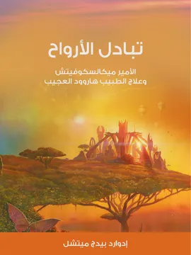

تبادل الأرواح: الأمير ميكالسكوفيتش وعلاج الطبيب هاروود العجيب

قراءة عربية أصلية محددة النطاق في الصفحات 9 إلى 14 من ملف PDF المرتبط، وليست تلخيصا كاملا للكتاب. نناقش ما تدعمه هذه المقاطع فقط.
اعتراف طبيب نيويورك
يروي طبيب شهير كيف أمضى الأمير أيامه في حانوت صانع العربات مصابًا بهوس أحادي، وكيف وقعت عيناه على فقرة في دورية طبية عن عامل باليومية مجنون في تبليسي يتخيل أنه أمير قوي وثري: رجل فقير أمي لا يتحدث إلا بلهجة مينجروليا المغمورة، سمع أثناء هذيانه يتحدث الروسية والألمانية والفرنسية والإنجليزية بطلاقة وتحضر. لاحظ الطبيب أن الحالة مماثلة لحالة الأمير بالضبط ولكن على نحو عكسي: فقد أراد الأمير أن يصبح صانع عربات، وأراد صانع العربات أن يصبح أميرًا.
زاوية وحدود القراءة
قراءة موجزة من ص ٩ إلى ص ١٤ من أصل ١٦ صفحة، تعرض القصة الأولى شبه كاملة، لا القصتين معًا.
الطبعة والقراءة
هذه الترجمة العربية صادرة ومتاحة مجانًا من مؤسسة هنداوي بشكل قانوني؛ حيث إن نص العمل الأصلي يقع في نطاق الملكية العامة تبعًا لقوانين الملكية الفكرية.
تنزيل PDF المجاني ↓ القراءة والمصدر الرسمي ↗